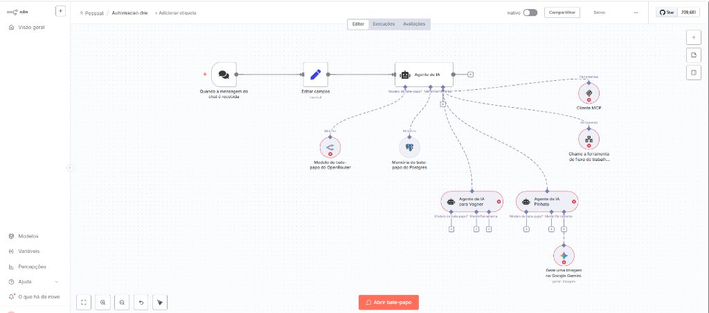

Recepção de mensagens em tempo real originadas de interfaces executivas, WhatsApp ou portais corporativos.
Sanitização de prompt, enriquecimento de metadados, identificação do remetente e injeção de parâmetros contábeis.
Núcleo decisor autônomo. Avalia o prompt, consulta ferramentas conectadas e delega tarefas aos sub-agentes.
Gateway universal para inferência dinâmica entre GPT-4o, Claude 3.5 Sonnet e DeepSeek, balanceando custo e latência.
Persistência conversacional contextual. Permite perguntas encadeadas sobre o DRE sem perda de contexto histórico.
Agentes dedicados (Vagner & Pinhata) com instruções especializadas para conciliação contábil e auditoria financeira.
Geração de gráficos visuais explicativos e análise multimodal de comprovantes ou dashboards sob demanda.
Integração via Model Context Protocol para consulta atômica ao banco de dados SQLite fato_dre e chamadas ERP.